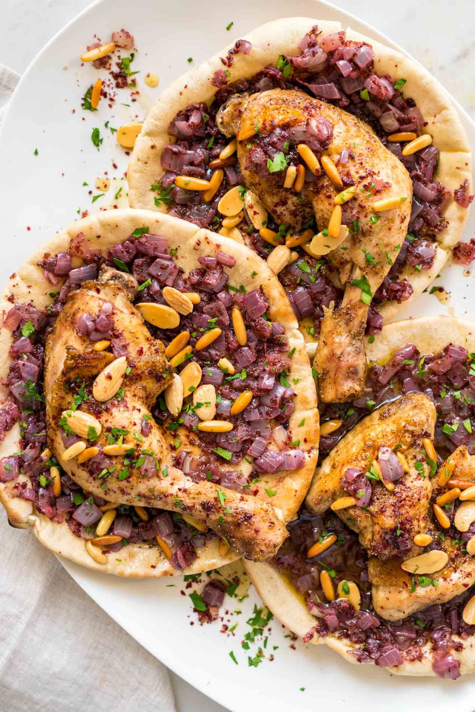

Musakhan

Sumac Chicken And Caramelized Onion Flatbread
This warm, savory Musakhan sumac chicken with caramelized onion flatbread will wow your taste buds in the best way possible! A Traditional Palestinian roast chicken dish, perfectly flavored and roasted to tender perfection, served with sweet caramelized onions, flatbread, and pine nuts.
So what is Musakhan? Musakhan is roast chicken, heavily scented with sumac and and a few other warm spices and served with caramelized onion flatbread. It is the epitome of comfort food, Palestinian style.
Ingredients
- Chicken Thighs
- Onions
- Sumac & Spices
- Flatbread
- Sugar
- Cornstarch
- Butter
- Pistachio powder
Recipe Steps
- This spice mixture will be used throughout the recipe, so it's good to have it prepared ahead and ready for use. In a small bowl, combine allspice, cinnamon, coriander, black pepper, cardamom and nutmeg. Mix well.
- Pat chicken pieces dry and place them on a lightly oiled sheet pan (or roasting pan). Drizzle generously with extra virgin olive oil, season with kosher salt on both sides. Add 1 teaspoon sumac and 1 ½ teaspoon of the spice mixture. Give the chicken a good rub with your hands. Arrange the chicken pieces skin side up and place on the middle rack of your heated oven. Roast for about 1 hour or until fully cooked (internal temperature should register 165 degrees F.)
- While the chicken is roasting, work on the onions. In a large cooking skillet, put just over ½ cup extra virgin olive oil (I used Private Reserve Greek EVOO) chopped onions, kosher salt, 1 tablespoon sumac, 1 tablespoon cumin, and 2 teaspoon of the spice mixture. Cook over medium-low heat, stirring occasionally. This will may take anywhere from 30 to 40 minutes, and your goal here is to cook the onions well until they quite soft, but you are not looking to brown the onions.
- Check on the chicken, and if ready, remove from the oven
- Arrange flatbreads on a large baking sheet. Spread enough of the caramelized onion mixture on the surface of each flatbread, leaving a small border around the edge (like pizza). Add a generous sprinkle of sumac. Sprinkle toasted pine nuts. Place under the broiler briefly (2 to 4 mins), watching carefully, until edges are browned and onion mixture is caramelized.
- When flatbreads are ready, top each with a chicken portion to serve.